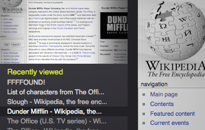

This is a list of the pages you've viewed most recently, either by browsing or by switching tabs. Click on a title to return to that page. If the page is already open in another tab, Firefox will just switch to that tab.
If you have
recording
enabled, you'll see a thumbnail of each page as you mouse over it.